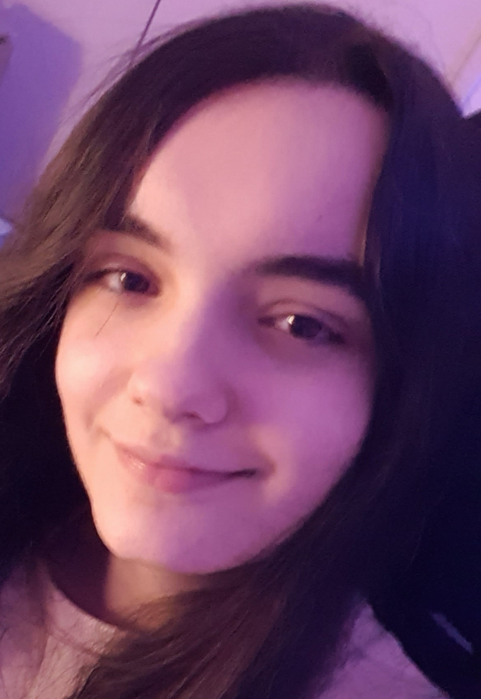
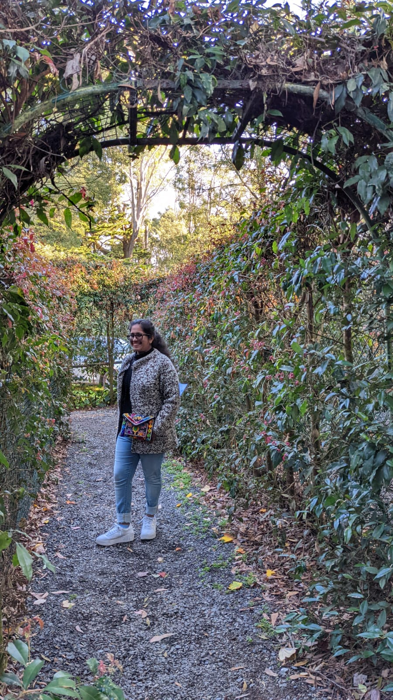

IT GROUP 16 - CYBERSOLDIERS
Quan, Romy, Alex and Gauri
Our Team Members
Quan Tan Bui (s3948578)

I am a first year RMIT student in Information Technology. I was born in Ho Chi Minh City, Vietnam; so, Vietnamese is my mother language. I moved to Australia when I was 12 years old and have been living here ever since. I received my secondary education at the Indooroopilly State High school, Queensland and Viewbank College, Victoria. I have always been passionate about utilising technology to connect people and enhance education, particularly in developing countries. Apart from my interest in technology, I also enjoy music, cooking, photography, planes, trains, and video games in my free time. I love chatting with friends and learning more about what they are thinking about the world’s future.
Alexander Koulis (s3942717)

I was born in Carlton, Victoria, which makes me Australian. However, my cultural background and heritage lies in Greece where my grandparents were born and immigrated to Australia during the early 1960’s to escape from lack of jobs and poverty. Both my parents were born in Australia, the first-generation children of Greek immigrants but influenced by the Greek Orthodox religion and a retained culture that has followed Greeks wherever they move to many centuries. I do in fact speak Greek and understand the language, but I am not as fluent as my parents are, as they grew up with the Greek language with their parents more than I have. I have completed my highest education which was Year 12 at Emmanuel College VCE in 2021 with my subjects being English, Further Math, Psychology, Software Development (Applied Computing), VET Sport and Recreation and a bit of CISCO networking in Year 10.
Romy Nicola Tokovic (s3948714)
I am the only child of my family, born in Victoria, Australia. My mum’s side is German, while my dad’s side of the family are Serbian. I love playing video games, fawning over retro technology, and listening to my music in my spare time. I love to help solve IT issues, whether it is for my friends or family. I am quite patient with finding solutions on the Internet as well as using my prior knowledge, which I am renowned for among people who know me well. I am extremely interested in the cybersecurity, networking, and IT administration fields, and hope to specialise in either of said fields in the future.
Gauri Gupta (s3954955)
I migrated to Melbourne, Australia in 2018. I was born in India in 2003 and lived there until I was 14 years old. My parents and sister were also born in India. My hobbies include karate, swimming, reading novels and painting. I am also interested in meeting new people and getting to know them. My interest in IT was generated when I came across my laptop and wondered how it was developed. I am also very much interested in testing all the prototypes of the new devices that the market and the IT world has to offer. The main reason I am interested in IT is because it pays well. I plan to major either in Cloud Foundations or Cybersecurity.